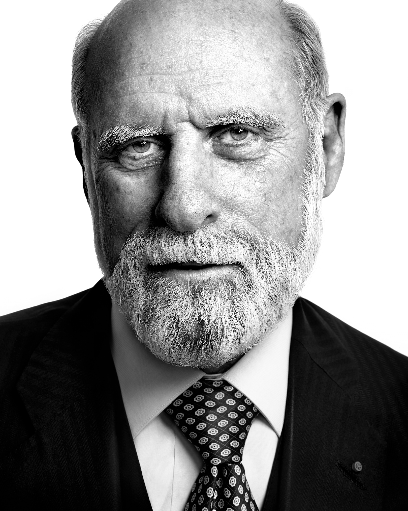

Создатель WWW Тим Бернерс-Ли.
Бернерс-Ли родился в Лондоне в 1955 году. Его родители — математики Конуэй Бернерс-Ли и Мэри Ли Вудс, которые работали над созданием первого компьютера. К тому времени как Тим поступил в Оксфордский колледж в 1973 году, он уже успел прославится как большой изобретатель.
Он сконструировал свой первый компьютер при помощи таких материалов и инструментов, как самодельный паяльник, процессор M6800 и запчасти от старого телевизора. Случилось даже так, что Тим и его друг были уличены во взломе и запрещённом использовании университетского компьютера.
После окончания университета Тим работал в компании, производящей телекоммуникационное оборудование, а затем — в различных организациях в качестве внештатного инженера по разработке и обслуживанию программного обеспечения.Главной его целью был поиск способа объединения вычислительной мощности компьютера с интуитивными свойствами человеческого мозга.
В течение следующих трёх лет Бернерс-Ли и его коллеги усовершенствовали интернет-сайты и убеждали других людей активно посещать их. С самого начала он отказался от права запатентовать интернет-сервис и зарабатывать деньги на использовании его некоммерческими структурами.
К 1994 году посещаемость созданного им ресурса https://info.cern.ch достигла уровня, в тысячу раз превышающего аналогичный показатель предыдущих трёх лет. Именно тогда учёные, соратники Тима, впервые использовали поисковую систему, что положило начало новому этапу развития индустрии информационных технологий.

Первый создатель протокола TCP/IP: Винт Серф
Винт Серф — создатель протокола передачи данных TCP/IP, патриарх-создатель Интернета, председатель Международной корпорации по распределению имен и номеров в Интернете (ICANN), вице-президент компании Google Inc., американский программист, ученый в области компьютерных наук, математик. Его вклад тяжело переоценить, неоднократно Винт был награжден почетными стипендиями и наградами, в его «закромах» хранится Национальная медаль технологии, Президентская медаль Свободы и премия Тьюринга. В 1992 году этот удивительный человек основал Internet Society (ISOC) /Общество Интернета. Работая в MCI, Винт принимал участие в создании первой коммерческой системы электронной почты (MCI Mail), подключенной к Интернету. Он автор многих предсказаний, касающихся роли современных технологий в будущности человечества. В 1994 году журнал «People» назвал Винтона Серфа одним из «25 самых интересных людей» года.
Винт Серф, его полное имя — Винтон Грей Серф, родился 23 июня 1943 года в Нью-Хэйвене (штат Коннектикут, США). Его отец был авиационным инженером, работал в компании Rocketdyne по выпуску ракетных двигателей. Школьные годы Серф провел в пригороде Лос-Анджелеса Ван-Найс, а затем поступил в Стэнфордский университет. Во время учебы у Серфа проявились наклонности к математике. Уже в то время у него стал развиваться интерес к компьютерам. Его влекла и очаровывала научная фантастика, в особенности произведения Рэя Брэдбери и Хола Клемента.
В Калифорнийском университете Серф начал работать над созданием непосредственного предшественника Интернета — сети ARPANET.
Роль Винта Серфа состояла в основном в разработке протоколов, совместно со Стивеном Крокером. Вместе с Робертом Каном, Винт разработал протоколы TCP/IP и написал программное обеспечение, чтобы оценивать работу ARPANET. В то время Серф был выпускником UCLA, при этом работал в лаборатории профессора Лена Клейнрока, который занимался диссертацией, посвященной коммутации пакетов. Леонард Клейнрока соединил два первых узла ARPANET, предшественика Интернета, и создал «host-to-host протокол» для ARPANET.
В 1972 году Серф вернулся в Стэнфордский университет, где получил место доцента. Серф продолжал сотрудничать с Каном. В 1973 году Кан понял, что протокол NCP устарел, и попросил помощи у Серфа. В 1974 году ими была опубликована статья «Протокол для пакетной межсетевой коммуникации», в статье описывался протокол передачи данных TCP, позволяющий передавать данные между разными сетями. Вот благодаря чему Серфа и Кана назвали отцами «Интернета».
Второй создатель протокола TCP/IP: Роберт Кан
Роберт Кан родился 23 декабря 1938 года в Бруклине в Нью-Йорке в еврейской семье работника средней школы Лоренса Кана и домохозяйки Беатрис Полин Ташкер, семья которой происходила из Каменец-Подольского. Его родственник — Герман Кан.
В 1960 году получил степень бакалавра инженера-электрика в Нью-йоркском Сити-колледже (Городском колледже Нью-Йорка).В 1962 году получил степень магистра, а в 1964 году — степень доктора наук в университете Принстона.
Затем работать в «AT&T Bell Laboratories», начал преподавать в Массачусетском Технологическом Институте, работал и в компании «BBN Technologies».В 1972 году поступил на работу в государственное агентство по военным разработкам ARPA (ныне DARPA). В октябре 1972 года состоялся первый опыт по созданию работоспособной сети ARPANET, включавшей 40 серверов.
В 1972−1974 годах для решения проблемы совместимости различных систем и каналов связи Кан привлёк Винтона Серфа; команда Кана-Серфа под руководством Леонарда Клейнрока разработала ТСP — протокол удалённого сетевого обмена — один из основных протоколов передачи данных интернета, предназначенный для управления передачей данных.Кроме того, команда Кана и Серфа разработала протокол IP (Internet Protocol).Работа Кана и Серфа подготовила и создала базу для Интернета.
Достигнув поста директора информационного департамента DARPA, в последующие годы Кан управлял многомиллиардным проектом Strategic Computing Program.В 1986 году перешёл на работу в CNRI и возглавляет её по данным на июль 2013 года.
Являлся членом совета директоров компании Qualcomm.